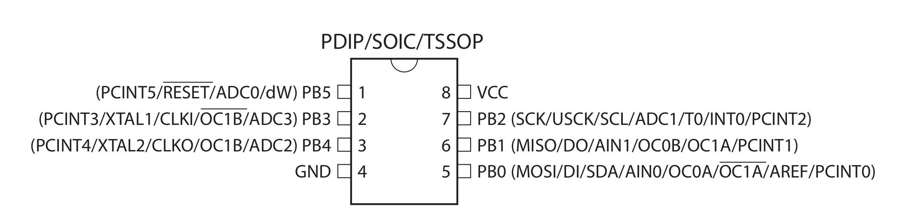
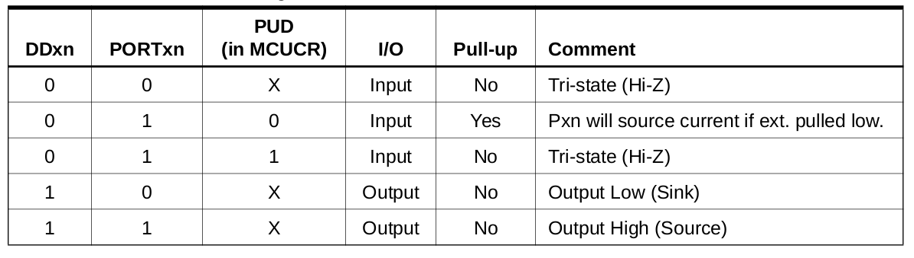
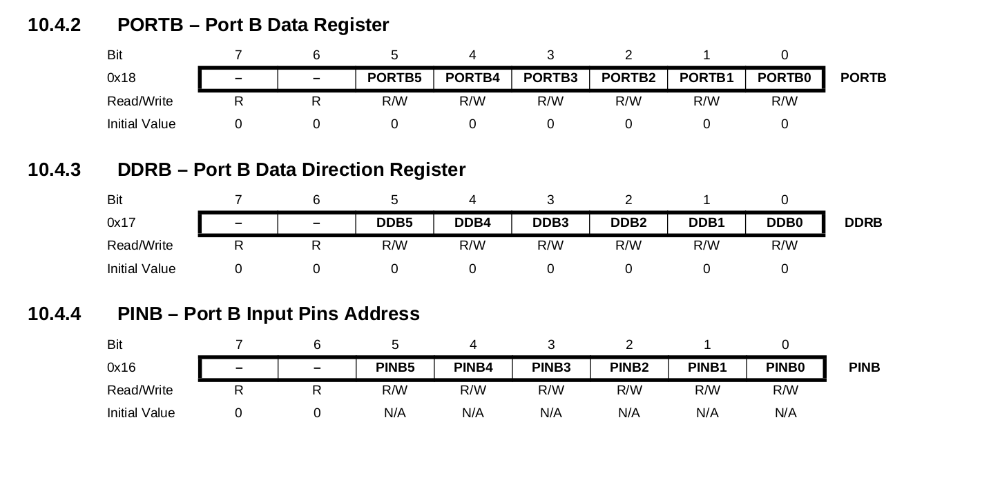

Introdução
Agora que já estamos com as ferramentas instaladas e a placa Franzininho DIY em mãos, vamos dar início aos estudos dos periféricos internos do ATtiny85.
Nesse artigo vamos explorar os pinos de I/O como saída digital. Ao final, você saberá como acionar dispositivos externos a Franzininho DIY.
Recursos Necessários
- Placa Franzininho DIY(com Micronucleus)
- Computador com as ferramentas de software instaladas
Pinos do ATtiny85
O ATtiny85 possui 8 pinos, sendo que 6 deles podemos usar como I/O (entradas ou saídas) digitais. Os pinos de I/O são nomeados conforme a porta que eles pertencem. Na figura a seguir vemos que os pinos do ATtiny85 são nomeados de PBx, onde x é o número correspondente ao pino no registrador (não se preocupe, vamos ver mais detalhes a seguir):

Cada pino de I/O pode ser usado como entrada ou saída e também como outras funções nesse momento só vamos trabalhar com os pinos funcionando como GPIO (General Porpouse Input/Output).
Conforme exibido na imagem acima, temos os seguintes pinos disponíveis no ATtiny85:
PB0, PB1, PB2, PB3, PB4, PB5.
Algumas Particularidades do circuito da Franzininho DIY
Os pinos de I/O são marcados em Amarelo no Pinout da Franzininho DIY

- O pino PB5 é configurado como RESET na Franzininho DIY, sendo assim não poderemos usá-lo como I/O.
- Os pinos PB3 e PB4 são usados para o circuito da USB, sendo assim temos que usá-los com cautela. Geralmente esses pinos são usados apenas como saídas digitais.
- O LED amarelo da placa está ligado ao pino PB1.
- Os pinos PB0 E PB2 não possuem circuito ligados a eles.
Registradores responsáveis pelos pinos de I/O
Para trabalhar com os pinos de I/O no ATtiny85 temos 3 registradores: - PORTB: Registrador de dados. Responsável pela escrita nos pinos; - DDRB: Registrador de direção do pino. Responsável pela configuração dos pinos para definir se será entrada ou saída; - PINB: Registrador de entrada da porta. Responsável pela leitura do estado do pino.
Note que todos os registradores terminam com B no final. Isso significa que estamos trabalhando com o PORTB. Caso fosse um microcontrolador com maior quantidade de pinos teríamos os finais A, B,C, etc. Cada porta só possui no máximo 8 pinos.
Na seção 10 do datasheet do ATtiny85 temos todos os detalhes para se trabalhar com os I/O. A tabela a seguir, retirada do datasheet, exibe as configurações possíveis para os pinos:

A figura abaixo exibe os registradores responsáveis pelos pino de I/O do PORTB:

Note que cada bit dos registradores é responsável por pino sendo indexado pelo número correspondente ao bit. Dessa forma, se quisermos usar o pino PB1 para acionar o LED, devemos configurar o registrador DDRB da seguinte forma:
| 7 | 6 | 5 | 4 | 3 | 2 | 1 | 0 |
|---|---|---|---|---|---|---|---|
| - | - | 0 | 0 | 0 | 0 | 1 | 0 |
E para acionar ligar/deligar o LED devemos colocar 1 ou no bit correspondente no PORTB.
Vamos a um exemplo para ficar mais claro.
Códigos
/**
*
* @file main.c
* @author Fábio Souza
* @brief Exemplo para acionamento do LED na pino PB1
* @version 0.1
* @date 2021-02-03
*
* @copyright Franzininho
* This example code is in the Public Domain (or CC0 licensed, at your option.)
* Unless required by applicable law or agreed to in writing, this
* software is distributed on an "AS IS" BASIS, WITHOUT WARRANTIES OR
* CONDITIONS OF ANY KIND, either express or implied.
*
*/
#include <avr/io.h>
#include <util/delay.h>
#define F_CPU 16500000L //frequência do oscilador. usado para a função de delay
/**
* @brief Função main
*
* @return int
*/
int main(void)
{
DDRB = 0b00000010; // Configura Pino PB1 como saída (Pino do LED)
/**
* @brief loop infinito
*
*/
while (1)
{
PORTB = 0b00000010; //liga LED
_delay_ms(250); // delay 250 ms
PORTB = 0b00000000; //desliga LED
_delay_ms(250); // delay 250 ms
}
return (0);
}
O exemplo acima pisca o LED em intervalos de 250 ms. A configuração do pino PB1 como saída foi feito colocando o bit1 de DDRB em 1. Já para ligar e desligar o LED foi manipulado o bit 1 de PORTB, hora em 1 hora em 0.
Bacana, não?
podemos melhorar a manipulação dos bits dos registradores usando macros. As macros são rotinas que facilitam nossas vidas. Recomendo que se você leia esse artigo para entender sobre as macros e as operações efetuadas: https://www.embarcados.com.br/bits-em-linguagem-c/
Vamos usar as seguintes macros:
#define setBit(valor,bit) (valor |= (1<<bit))
#define toogleBit(valor,bit) (valor ^= (1<<bit))
Os nomes já são auto-explicativos mas vamos verificar como usá-las no programa em C:
/**
*
* @file main.c
* @author Fábio Souza
* @brief Exemplo para explorar as saídas digitais e o uso de macros
* @version 0.1
* @date 2021-02-03
*
* @copyright Franzininho
* This example code is in the Public Domain (or CC0 licensed, at your option.)
* Unless required by applicable law or agreed to in writing, this
* software is distributed on an "AS IS" BASIS, WITHOUT WARRANTIES OR
* CONDITIONS OF ANY KIND, either express or implied.
*
*/
#include <avr/io.h>
#include <util/delay.h>
#define F_CPU 16500000L
//macros
#define setBit(valor,bit) (valor |= (1<<bit))
#define toogleBit(valor,bit) (valor ^= (1<<bit))
/**
* @brief Função main
*
* @return int
*/
int main(void)
{
setBit(DDRB,PB1); // Configura Pino PB1 como saída (Pino do LED)
/**
* @brief loop infinito
*
*/
while (1)
{
toogleBit(PORTB,PB1); //inverte o estado do pino
_delay_ms(250); // delay 250 ms
}
return (0);
}
Dessa forma manipulamos somente os bits desejados, não alterando os valores dos outros que poderão ser usados para outras aplicações.
Desafio
Coloque outro LED no pino PB0 e o acione alternadamente ao pino PB1, ou seja, quando LED no PB0 estiver ligado o LED em PB1 deve apagar e vice-versa.
| Autor | Fábio Souza |
|---|---|
| Data: | 24/04/2021 |